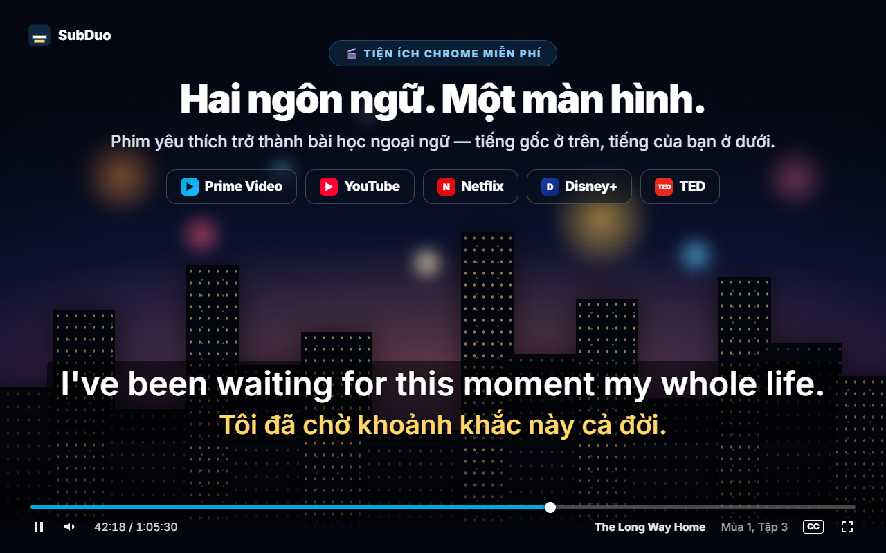
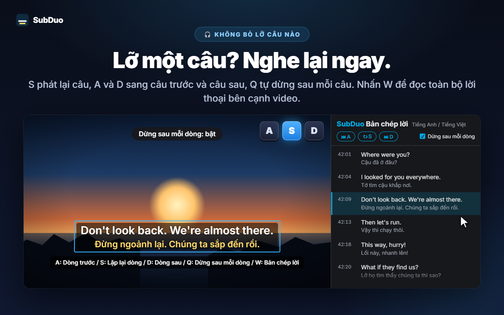
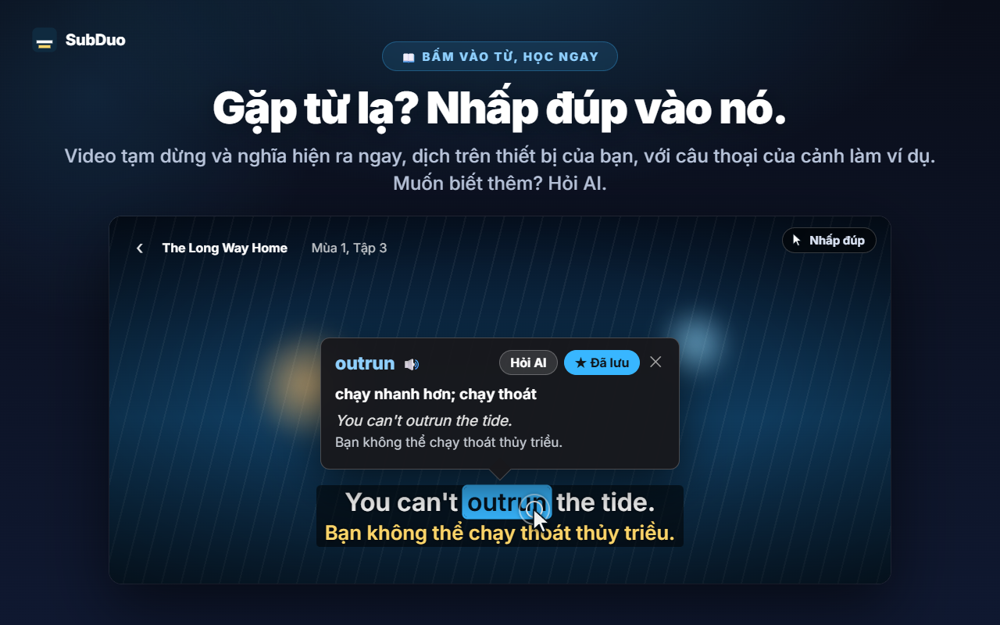
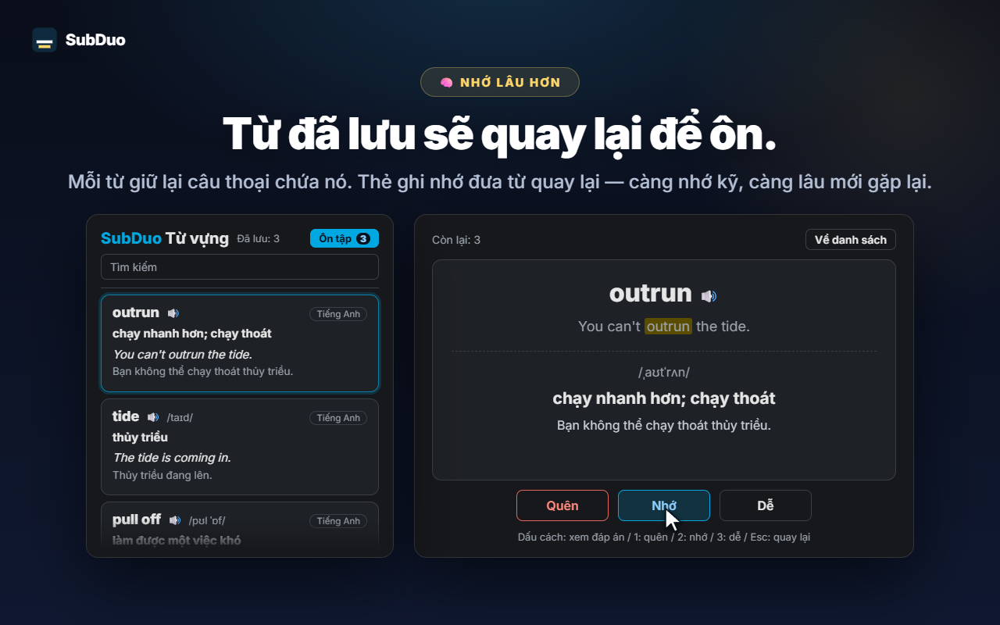

Hai ngôn ngữ phụ đề tùy chọn
Mọi phụ đề mà trang cung cấp đều được phát hiện khi video bắt đầu phát, kể cả phụ đề tự động của YouTube. Chọn một ngôn ngữ cho mỗi dòng, hoặc ẩn một dòng.
SubDuo hiển thị phụ đề hai ngôn ngữ cùng lúc — tiếng gốc ở trên, tiếng của bạn ở dưới. Nhấp đúp vào một từ để xem nghĩa, nghe lại một dòng chỉ với một phím, và lưu những gì đã học vào danh sách từ vựng tích hợp.
Dùng phụ đề sẵn có của từng trang · Không cần tài khoản · Phụ đề ở lại trong trình duyệt của bạn
Trình phát của các dịch vụ chỉ hiện một ngôn ngữ phụ đề mỗi lần. SubDuo thêm ngôn ngữ thứ hai — cùng các công cụ để học từ đó.
Màn hình thật của tiện ích, hiển thị bằng ngôn ngữ của bạn.

Chọn hai trong số các phụ đề mà phim cung cấp — tiếng gốc ở trên, tiếng của bạn ở dưới. Kéo phụ đề đến bất cứ đâu, cuộn chuột trên một dòng để đổi cỡ, và nhấp phải để đổi màu, độ trong suốt hoặc làm mờ.

Nhấn S để lặp lại dòng, A và D để lùi và tiến, Q để tự dừng sau mỗi dòng. Nhấn W để mở bản chép lời trong bảng bên của Chrome — đủ hai ngôn ngữ, từng dòng một — và nhấp vào hàng bất kỳ để chuyển đến đó.

Video tạm dừng và một thẻ hiện nghĩa ngay lập tức, do trình dịch tích hợp của Chrome dịch trên thiết bị của bạn, với chính câu thoại của cảnh làm ví dụ. Alt+kéo để chọn cụm từ. Nhấn “Hỏi AI” để xem nghĩa theo ngữ cảnh, cách phát âm và câu ví dụ.

Mỗi từ đã lưu giữ lại câu thoại chứa nó. Tìm kiếm và lọc danh sách từ vựng, nghe phát âm, và ôn tập bằng thẻ ghi nhớ — càng nhớ kỹ một từ, càng lâu nó mới quay lại.
Không tài khoản, không màn hình thiết lập. Cài đặt rồi nhấn phát.
Cài SubDuo từ Cửa hàng Chrome trực tuyến, rồi phát video trên Prime Video, YouTube, Netflix, Disney+ hoặc TED.
Nhấp biểu tượng SubDuo và chọn một ngôn ngữ phụ đề cho dòng trên, một cho dòng dưới. Danh sách chỉ gồm những phụ đề mà phim có sẵn.
Nhấp đúp vào từ để tra, nhấn A, S hoặc D để nghe lại các dòng, và mở danh sách từ vựng từ cửa sổ tiện ích.
Dành cho người học qua phim ảnh — và muốn phụ đề không vướng víu cho đến khi cần.
Mọi phụ đề mà trang cung cấp đều được phát hiện khi video bắt đầu phát, kể cả phụ đề tự động của YouTube. Chọn một ngôn ngữ cho mỗi dòng, hoặc ẩn một dòng.
Nhấp đúp hoặc Alt+nhấp vào một từ, hoặc Alt+kéo để chọn cụm từ. Video tạm dừng và bản dịch hiện trên video, được thực hiện ngay trên thiết bị của bạn.
Nghĩa theo ngữ cảnh, cách phát âm và câu ví dụ, bằng ngôn ngữ hiển thị của bạn. Tối đa 20 lượt giải thích mỗi ngày, miễn phí.
Lưu từ chỉ với một lần nhấp, tìm kiếm, lọc theo ngôn ngữ và nghe bằng 🔊. Thẻ ghi nhớ giãn khoảng cách với những từ bạn đã thuộc.
A về dòng trước, S lặp lại, D sang dòng sau. Q tự dừng sau mỗi dòng. Làm mờ một dòng để tự kiểm tra, rồi trỏ chuột vào để xem đáp án.
Mọi dòng thoại bằng cả hai ngôn ngữ ngay cạnh video. Dòng đang phát được làm nổi bật; nhấp vào hàng bất kỳ để chuyển đến đó. Nhấn W để mở.
Kéo để di chuyển, cuộn để đổi cỡ một dòng, phím mũi tên để chỉnh nhẹ, căn trái, giữa hoặc phải. Nhấp phải để đặt màu, độ trong suốt và làm mờ cho từng dòng.
Phụ đề lớn trên YouTube, nhỏ gọn trên Netflix — cài đặt được lưu theo từng trang và đồng bộ qua Chrome của bạn.
Menu, bản dịch và phần giải thích AI dùng ngôn ngữ hiển thị bạn chọn, có thể khác ngôn ngữ của Chrome.
SubDuo đọc các tệp phụ đề mà mỗi trang vốn đã gửi đến trình duyệt của bạn và hiển thị ngay tại đó. Thứ duy nhất được gửi ra ngoài là cụm từ bạn chọn để hỏi AI, cùng dòng phụ đề chứa nó.
Phụ đề được phân tích và hiển thị trong trình duyệt của bạn. Cài đặt, danh sách từ vựng và lịch sử xem không được gửi cho nhà phát triển. Việc dịch từ chạy trên thiết bị bằng trình dịch tích hợp của Chrome.
Khi bạn nhấn “Hỏi AI”, cụm từ đã chọn, dòng phụ đề chứa nó và dòng còn lại trên màn hình, mã ngôn ngữ và một mã thiết bị ngẫu nhiên (để tính giới hạn mỗi ngày) được gửi đến máy chủ SubDuo, máy chủ này nhờ OpenAI tạo phần giải thích. Địa chỉ IP của bạn được xử lý để vận hành dịch vụ.
Không có gì phải đăng ký. Tiện ích không chứa quảng cáo hay công cụ phân tích.
“storage” cho cài đặt và từ vựng, “scripting” để kết nối lại các thẻ đang mở sau khi cập nhật, “sidePanel” cho bản chép lời, và chỉ truy cập năm trang được hỗ trợ.
Cài từ Cửa hàng Chrome trực tuyến chỉ trong vài giây